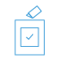
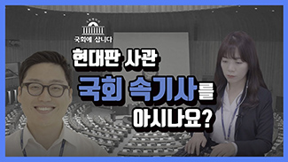
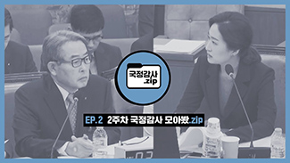

국민국회활동
국회회의
의사일정
회의록
인터넷의사중계·영상회의록
국회경과보고서
법률안
의안정보·입법예고
법률안처리과정
맞춤서비스안내
예산안과 결산
예산안과 결산 현황
예산안과 결산 처리과정
국정감사
국정감사계획서
국정감사처리과정
위원회
위원회 현황
위원회 공지
공시송달
국회공보
친·인척 보좌직원 현황
의원활동
국회의장
국회의장 소개
주요동정
주요일정
대변인실
보도자료
국회부의장
국회부의장 소개
주요일정
주요동정
국회의원현황
의원실행사
의원실채용
의원연구단체
연구단체 소개
연구단체 등록 현황
연구활동비 집행 현황
연구활동 보고서
의회외교
의회외교포럼
의회외교포럼 구성
포럼 활동보고
국제현안 분석
보도 및 사진자료
의원외교단체
의원외교단체 소개
의원외교단체 현황
의원외교단체 활동보고
의원외교활동
국제회의
- 유라시아 국회의장회의
- 믹타(MIKTA) 국회의장회의
- 국제의회연맹(IPU)
- 아시아태평양 의회포럼(APPF)
- 기타 국제회의
알림마당
공지사항
보도자료
전체
국회의장
국회사무처
국회도서관
국회예산정책처
국회입법조사처
위원회
국회미래연구원
행사알림
전체
문화행사
정책행사
국회매거진
국회보
국회정보서비스
운영 사이트
모바일 서비스
정책참고자료실
전체
국회사무처 법제정보
자문위원회 결과보고서
분실물 안내
소통마당
국회민원
민원안내
민원신청
민원현황
국민참관
국회참관안내
국회방청안내
의정연수
의정연수안내
정보공개
국민제안
국회소개
국회의 구성
국회의장단
국회의원
위원회
교섭단체
입법지원조직
조직도
국회가 하는 일
역할과 권한
국회의 회기
본회의 소개
국회의 역사
역대국회 소개
국회의사당 변천
국회의 이모저모
국회 건축
예술 작품
산책로
국회자료실
홍보간행물
국회상징(AI)
이미지자료실
서식자료실
영상자료실
연락처 안내
찾아오는 길
법률안과 예결산
법률안과 예결산
회의공개
본회의 표결정보
행사정보
위원회
의원정보
법류안,예결산등
모든 의안을 볼 수 있습니다.
입법예고
회부된 법률안에 대하여
국민들의 의견을 받습니다.
법률정보
각종 법령정보를
제공합니다.
예결산
예산결산 심사현황을
확인할 수 있습니다.
인터넷 의사중계
국회의 회의를
실시간으로 중계합니다.
영상회의록
지난 회의영상을
다시 볼 수 있습니다.
회의록
국회의 모든 회의기록을
볼 수 있습니다.
국회방송
회의영상 및 다양한
프로그램을 제공합니다.
본회의 표결정보
원안가결
재석:190/재적:295
주택법 일부
개정 법률안(대안)
2019.11.19
찬성(189)
반대(0)
기권(1)
바로가기

의안별
의안별 표결정보를
볼 수 있습니다.
의원별
의원별 표결정보를
볼 수 있습니다.
12.02
행사명
- 방정환 세계화를 위한 정책포럼
- 바른인권여성 연합 창립 기념...
-김산업 진흥에 관한 법률안 입법...
의원실행사
각 의원실에서
주최하는 행사정보
국회 기관 행사
국회가관에서
주최하는 행사정보
국회의원 정책자료
의원실에서 주최한
세미나 관련자료
전체위원회소개
바로가기
공지사항
- 국회방송 주간편성표(12월 2일~12...
- 기자회견 일정(2일, 월)
- 국회 직영식당 음식물쓰레기 위탁처리...
보도자료
- 현진권 국회도서관장 임명
- [보도참고자료] 주간 의안접수현황...
- [보도해명자료] 국회입법조사처...
인터넷 의사중계
국회의 회의를 실시간으로 중계합니다
click
국회관람
국회의 회의를 실시간으로 중계합니다
click
국회의원
국회의원 정보가 궁금하신가요?
click
국회민원
진정을 통해 국민의 민원을 받습니다
click
국회 문화행사
문화행사 예약 신청을 하실 수 있습니다
click
01

02

03
의사결정
-
위원회
[보건복지위원회] 전체회의
-
위원회
[외교통일위원회] 전체회의
-
위원회
[외교통일위원회] 법안심사 소위원회
주요정치일정
- 주요정치일정(12.2)-월요일
2019-12-02
- 주요정치일정(11.29)-금요일
2019-11-29
- 주요정치일정(11.28)-목요일
2019-11-28
국회의장 주요동정
- 국회 생생텃밭 김장행사참석
2019-12-02
- 사랑의 열매 희망나눔캠페인...
2019-11-29
- 응웬 쑤언 푹 베트남 총리 면담
2019-11-28